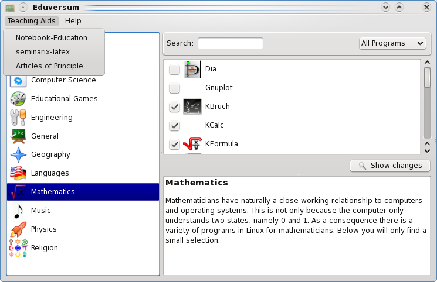

Instructions for using Eduversum
- Index
- General
- Installation
- Useful Links
- Info
General
In Eduversum there is a considerable list of educational programs, which were favoured by the creators of seminarix.
This HowTo explains in short how to deal with programs which are introduced in the manual but not contained on the live-CD/DVD.

You can start an installed application by double clicking on the program's icon or by clicking the < Start > button.
Teaching Aids
Under the menu item "Teaching Aids" you can find teaching aid (examples), articles concerning seminarix and free software.

Useful Links
- seminarix Homepage: http://www.seminarix.org
- sidux Homepage: http://www.sidux.com
- sidux Manual: http://manual.sidux.com/
- sidux wiki: http://sidux.com/index.php?module=Wikula
Info
The screen-shots were created with kSnapshot.
Thanks to
A thanks to Roland Engert (RoEn) and Dinko Sabo (cobra) for their support, as well as the whole "sidux-seminarix Team".
Translation by Nikolas Poniros (edhunter).
Copyright © 2009, Hendrik Lehmbruch: CC-by-SA 3.0